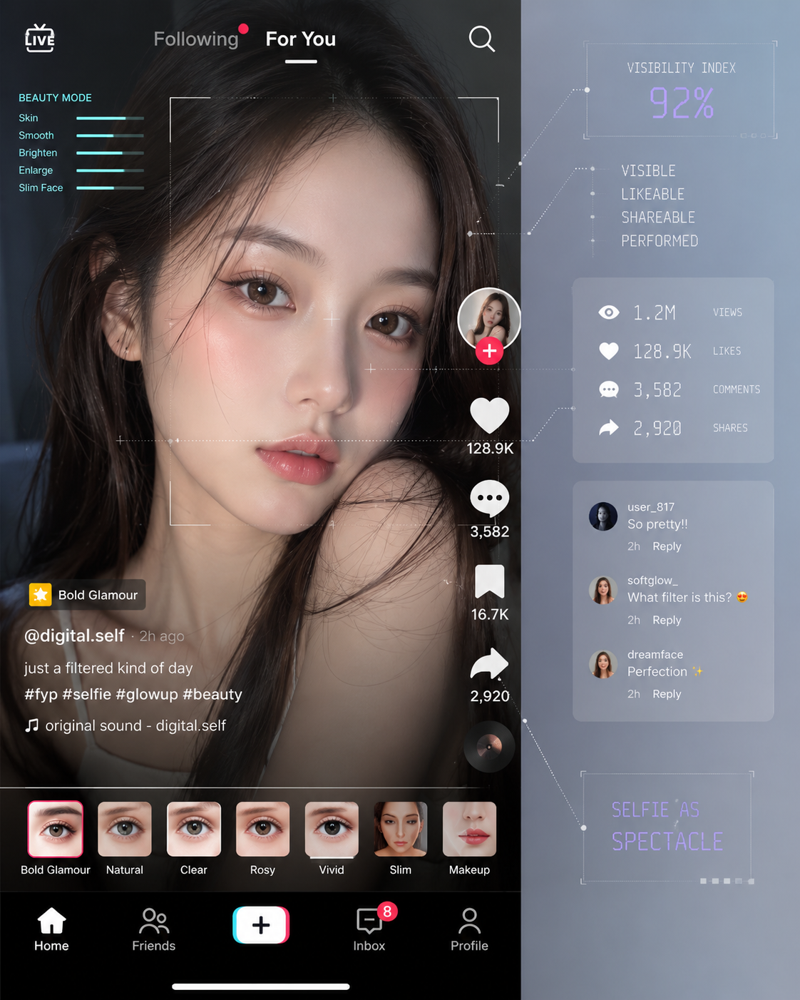

VISIBLE LIKEABLE SHAREABLE PERFORMED02 / PLATFORM PERFORMANCE
From Photograph to Performance
The filtered selfie becomes a spectacle designed for visibility.
On TikTok and Instagram, the selfie is no longer only a personal image. It is produced within a platform environment where faces are made visible, evaluated and circulated through likes, comments and shares.
Beauty filters transform the photograph into a performance. The face is adjusted not only to look attractive, but to become readable, clickable and shareable within the logic of the platform.
THEORETICAL FRAME
Guy Debord describes spectacle as a social relation mediated by images. In this context, the filtered selfie is not just an image of the self, but a performance shaped by visibility, attention and platform feedback.
Debord, 1967REFERENCE NOTE
Social media platforms shape how users present themselves through visibility and connectivity.
van Dijck, 2013